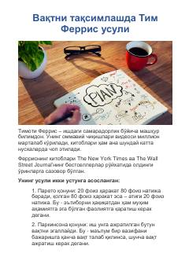

VTTim Ferris usuli yordamida vaqtingizni to'g'ri taqsimlang va samaradorlikni oshiring.
Ushbu qo'llanma mashhur mutaxassis Timotiy Ferrisning vaqtni boshqarish va ish samaradorligini oshirish usullariga bag'ishlangan. Unda Pareto qonuni, Parkinsoon qonuni hamda vazifalarni to'g'ri rejalashtirish texnikalari yoritilgan. Kitob o'quvchilarga o'z vaqtini oqilona taqsimlash va kamroq harakat bilan ko'proq natijaga erishish sirlarini ochib beradi.